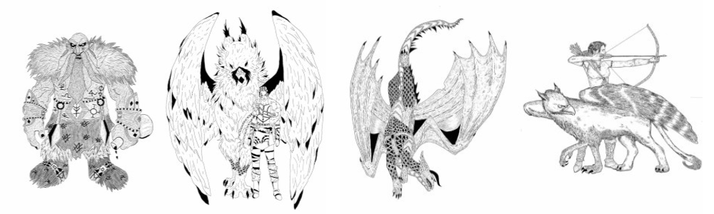

Onde tudo começou
O jovem Alisson Santos acompanhava desde muito novo as histórias dos consolidados escritores C.S Lewis e J.R.R. Tolkien. Seu amor pela leitura e a fantasia se intensificaram ainda mais quando descobriu as histórias da escritora norte americana, Cassandra Clare.
Sua admiração e paixão pelos animes japoneses tambêm influenciaram muito sua vida nessa época. Animes como Death Note e Demon Slayer ensinaram a Alisson o valor de uma boa narrativa com uma visão mais cinematografica.
Foi com essa visão que o jovem autor decidiu imaginar, criar e desenhar seus próprio personagens. Tudo não passava de uma brincadeira a princípio, mas com ótimos feedbacks que Alisson vinha recebendo, não teve escolha a não ser colocar sua imaginação de uma vez por todas nas páginas.
